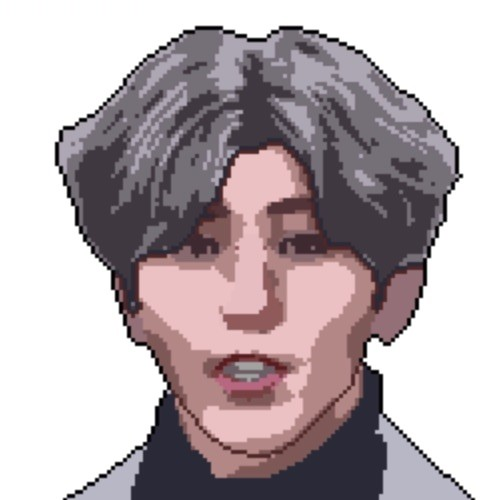

聶.NET
首页
动态
分类
归档
友链
留言
关于
RSS
☀
花有重开日，人无再少年
_
与我联系
近期发布
← 上一页
1/4 · 39篇
下一页 →
×
2026-02-07
我最后还是自己写了这个博客系统
🔥 置顶
#博客
#静态站点
#Hexo
#WordPress
#Halo
2026-02-08
niekaixiang.com：现在它和聶.NET一样，都是我的博客域名
🔥 置顶
#域名
#博客
#折腾
2026-03-27
长夜翻旧梦，方知我才十八载
🔥 置顶
#成长
#青春
#回忆
#生活随想
2026-09-26
纯客户端复刻移动 App 协议：黑盒差分调试、坐标系统与确定性仿真
#移动应用安全
#协议逆向
#黑盒调试
2026-09-22
我的第一个中秋月饼居然是房东送的
#中秋
#月饼
#碎碎念
2026-08-22
探针：需要变成 Public 吗？
#NIE-SLA
#探针
#碎碎念
没有匹配的文章
⌂
▦
···